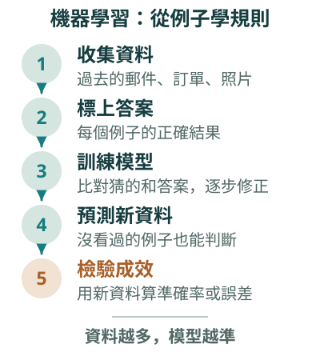
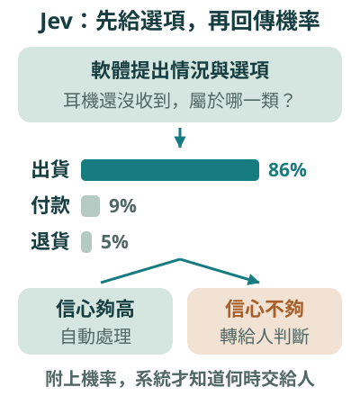
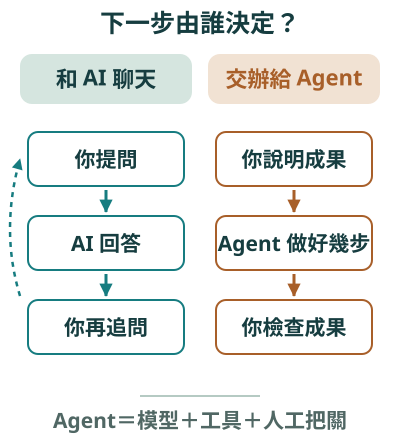
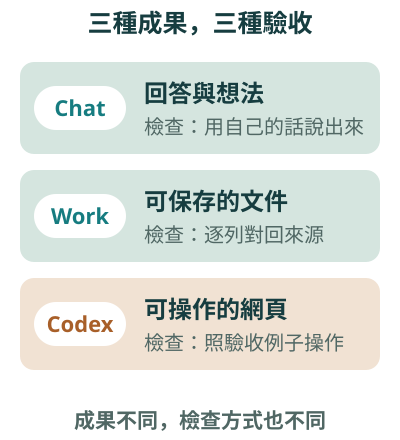
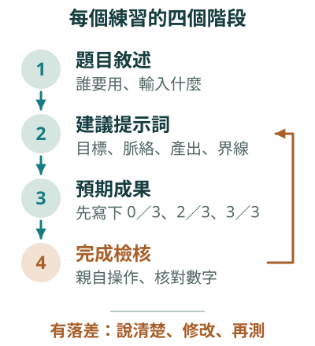

D學習準備清單網頁
你請在這個專案資料夾做一個「學習準備清單」網頁，存成一個用瀏覽器直接開啟就能使用的檔案，畫面用繁體中文。
頁面上方是標題和一句用途說明，下面有三個勾選項目：讀懂題目、整理資料、準備驗收。項目下方顯示「已完成 X／3」，勾選或取消勾選時立刻更新。
驗收例子：全部不勾顯示 0／3；勾兩項顯示 2／3；三項全勾顯示 3／3；全勾後取消一項回到 2／3。
不需要登入，不收集任何個人資料，不要加上我沒有提到的功能。
看懂不同 AI 交出什麼成果，再把想法寫成可以驗收的需求
從例子學規則
用打磚塊遊戲看它怎麼學
Jev 與 Decisions API
便宜、快、附機率
和 AI 聊天與交辦 Agent
Chat、Work、Codex 怎麼選
四個練習
回答、文件、小工具
四要素＋驗收例子
每個練習的四個階段
不論你讀哪一個科系，都用得上這套判斷
本頁要回答：這一單元要帶走什麼？
今天先回到 ChatGPT 出現之前，看看早就在生活中工作的 AI：機器學習與辨別式 AI。
接著看 2026 年的新趨勢：只做判斷、不寫文章的 Jev，以及 OpenAI 的 Decisions API。
後半段回到我們自己：什麼時候和 AI 聊天就好，什麼時候該把工作交給 Agent，還有怎麼把想法寫成可以驗收的需求。
來源：第 7 單元講義・開頭與「這一單元完成什麼」。
待補：無。
第 1 段／共 5 段
在會聊天的 AI 之前，AI 早已在身邊工作：看了資料，給出一個判斷。

先想一想：你今天用過哪些「只給判斷」的 AI？
本頁要回答：第一段要看什麼？
信箱過濾垃圾郵件、刷卡瞬間判斷盜刷、臉部解鎖、外送 App 估計幾分鐘送到，這些都是 AI，只是它們不寫文章，只給判斷。
這一段先看它們背後的方法：機器學習。
來源：第 7 單元講義・第 01 節。
待補：無。
機器學習｜1
準備大量「過去的例子＋當時的正確答案」，讓電腦自己反覆調整，找出能預測答案的規則。
因素太多、人寫不完的判斷，就交給機器學習
本頁要回答：機器學習和一般程式差在哪？
傳統程式是人寫規則，例如「標題有『中獎』就丟到垃圾郵件」。可是規則一多就寫不完，寫了也很快被繞過。
機器學習反過來：準備很多過去的例子和當時的正確答案，讓電腦自己反覆調整，找出能預測答案的規則。學好的規則就叫模型。
步驟有五個：收集資料、標上答案、訓練模型、預測新資料、檢驗成效。
來源：第 7 單元講義・第 01 節「機器學習：讓電腦從例子中找出規則」。
待補：無。
辨別式 AI 回答「這是哪一類？」或「會是多少？」；生成式 AI 則依照指示產生新的文字、圖片或程式。
輸出一個類別、分數或數字；通常只會訓練它回答的那一件事；和正確答案比對就知道準不準。
輸出新的文字、圖片、表格或程式；同一個模型能處理許多任務；多半沒有唯一答案，要由人判斷。
兩者都用機器學習訓練出來，差在要回答的問題和交出的成果。
看它交出什麼：一個判斷，還是一段新內容
本頁要回答：這兩種 AI 怎麼分？
兩者都是機器學習訓練出來的，差別在於要回答的問題和交出的成果。
辨別式 AI 回答「這是哪一類」或「會是多少」，例如垃圾郵件過濾、盜刷偵測、需求量預測。生成式 AI 依照指示產生新內容，例如起草文字、整理報告。
檢查方式也不同：辨別式可以和正確答案比對算準確率；生成式多半沒有唯一答案，要人判斷內容是否正確、合用。
來源：第 7 單元講義・第 01 節「辨別式 AI 與生成式 AI 有什麼不同」比較表。
待補：無。
這些 AI 不產生新內容，只回答一個訓練好的問題。
這封信是不是垃圾郵件？這則評論是正評還是負評？照片裡是貓還是狗？
這份外送大約幾分鐘送到？這間房子能租多少錢？明天會來多少客人？
這筆刷卡和平常習慣差很多嗎？網站流量突然暴增？機台讀數開始偏移？
問題的答案是「一類」或「一個數字」，就是辨別式 AI 的工作
本頁要回答：辨別式 AI 平常在做哪些事？
分類是判斷屬於哪一類；迴歸是預測一個數字；異常偵測是找出和平常不一樣的資料。
等一下的打磚塊遊戲，預測的是球的落點，是一個數字，所以它屬於迴歸。
來源：第 7 單元講義・第 01 節，分類、迴歸、異常偵測三張卡片。
待補：無。
這個神經網路只學一件事：……看到球目前的位置和方向，預測球會落在哪裡

它不會聊天，也不會產生新內容，但會越玩越準
特徵球的位置與方向 → 店家到你家的距離、下單時段、天氣、店家目前的訂單量
標籤球實際落下的位置 → 這張訂單實際花了幾分鐘送到
預測藍色三角形 → 新訂單畫面上的「預計 25 分鐘送達」
部署儲存、匯出、匯入模型 → 把模型放進 App，每張新訂單都自動算出預估時間
看點遊戲裡的答案會自動產生；很多真實問題要有人一筆一筆標答案，那往往最花時間。
本頁要回答：遊戲裡的 AI 在學什麼？
遊戲有兩種模式：手動由你控制球拍；電腦模式交給一個小型神經網路。
它只學一件事：看到球的位置和方向，預測球會落在哪裡。輸出是一個數字，所以是做迴歸的辨別式 AI。
圖上把五個步驟和外送平台預估送達時間並排：球的位置是特徵，實際落點是標籤，藍色三角形是預測，誤差圖是評估，匯出匯入模型就是部署。
來源：第 7 單元講義・第 02 節，圖「unit07-ml-demo」與名詞對照表。
待補：無。
開啟打磚塊 AI 遊戲，照順序試一次。
選「電腦（機器學習）」再按「重置模型」：參數是隨機的，幾乎接不到球。
遊戲速度拉到 16× 左右，看「誤差中位數」和「AI 接球率」：資料越多，模型越準。
重置後改按「預先訓練 2,000 球」，比較它和邊玩邊學的差別。
切回「手動」玩一會兒；你打出的每一球也會成為訓練資料。
按「匯入檔案…」，選 已訓練好的模型：這就是部署。
紅點（接不到）漸漸變成藍點（接得到）
本頁要回答：怎麼親眼看到「從例子學會」？
請大家打開遊戲，先重置模型，這時它完全接不到球。
把速度拉快，看誤差圖上的紅點慢慢被藍點取代。再試試一次看完兩千球的預先訓練，最後匯入已訓練好的模型，它會立刻變準，這就是部署。
來源：第 7 單元講義・第 02 節「動手試試：看著 AI 從不會到會」。
待補：無。
機器學習｜限制
遊戲中的模型只學過「球往下掉時會落在哪裡」，所以球往上飛時，球拍只會回到中間等待；它也不會告訴你為什麼這樣判斷。
模型的品質取決於資料
第 02 節ChatGPT 這類生成式 AI 也是用機器學習訓練出來的，只是它學的問題換成了「
第 02 節學會了這件事，同一個模型就能回答問題、整理資料、寫程式。
看點生成式 AI 學的是「接下來最適合出現的文字是什麼」。
本頁要回答：辨別式 AI 有什麼限制？
第一，它只會被訓練的那一件事。遊戲裡的模型只學過球往下掉的情況，球往上飛時就只會回到中間等。
第二，它不會告訴你為什麼。第三，品質取決於資料：用台北訂單訓練的送達時間模型，搬到交通完全不同的城市，表現可能變差。
生成式 AI 其實也是機器學習，只是它學的問題換成「接下來最適合出現的文字是什麼」，所以同一個模型能做很多事。
來源：第 7 單元講義・第 02 節「辨別式 AI 的限制」與「從辨別式 AI 到生成式 AI」。
待補：無。
第 2 段／共 5 段
2026 年出現一類新模型：用大型語言模型的理解力，交出辨別式 AI 的判斷。

它不寫文章，只回傳每個答案的機率
本頁要回答：第二段要看什麼？
這一段看 2026 年秋天的新例子。它說明一件事：AI 的發展不是生成式取代辨別式，很多流程真正需要的是快速、附機率的判斷。
來源：第 7 單元講義・第 03 節。
待補：無。
Jev 不聊天、不寫文章，專門做快速的判斷，而且是給其他軟體呼叫使用的。
快速、直覺的判斷。Jev 的名稱借自心理學家康納曼的這個說法。
緩慢、仔細的推理。寫文章、多步分析比較接近這一邊。
給其他軟體和 AI Agent 呼叫；一般使用 ChatGPT 時不會直接看到它。
TypeSafe AI 於 2026 年 9 月發表，10 月推出 Jev 1.14
本頁要回答：Jev 是什麼？
2026 年 9 月，新創公司 TypeSafe AI 發表第一個產品 Jev。執行長曾是 OpenAI 研究員，參與過 ChatGPT 與 GPT-4。
他們稱它為 System One Model。這借自康納曼的說法：System 1 是快速直覺的判斷，System 2 是緩慢仔細的推理。
依彭博社 10 月 9 日的報導，公司完成 8.7 億美元 A 輪募資，估值約 75 億美元。10 月 14 日的 1.14 版開始接受圖片，官方把圖片輸入和超長內容標示為實驗功能。
來源：第 7 單元講義・第 03 節開頭兩段。
待補：無。
軟體把一段「情況說明」和幾個問題一起交給 Jev，並事先限定可以接受的答案。

回傳的是每個答案的機率，加上信心程度
是非題回傳「這句話成立」的機率。例如：這封客服信需要真人回覆嗎？
選擇題每個選項各有一個機率。例如：這則訊息屬於退貨、付款還是出貨詢問？
量表題在「低、中、高」這類等級上給分數。例如：這則顧客抱怨的緊急程度是低、中還是高？
看點1.14 版另外加了「框選」，在圖片中標出某樣東西的位置。
本頁要回答：Jev 怎麼運作？
軟體把一段情況說明和問題交給 Jev，同時限定可以接受的答案。
Jev 不寫文字，而是回傳每個答案的機率和這次判斷的信心程度。圖上的例子：「上週訂的耳機還沒收到」，出貨 86%、付款 9%、退貨 5%。
來源：第 7 單元講義・第 03 節「Jev 怎麼運作」與圖「unit07-jev」。
待補：無。
判斷模型｜門檻
官方把它形容成軟體裡的「聰明 if 判斷」，並建議每個問題只問一件具體的事，複雜的判斷拆成幾個小問題，再由程式組合答案。
有了機率，系統才能決定什麼時候交給人
本頁要回答：附上機率有什麼用？
因為每個答案都附機率，使用 Jev 的系統可以設定門檻：信心夠高就自動處理，信心不夠就再查資料或交給人。
官方建議一個問題只問一件具體的事，複雜的判斷拆成幾個小問題，再由程式把答案組合起來。
來源：第 7 單元講義・第 03 節，三種題型之後一段。
待補：無。
這張客服單屬於哪一組？LangChain 把 Jev 當作自動分流的一個選項。
這段輸入是否想誘騙 AI？Vercel 的 AI Gateway 用 Jev 取代原本的安全分類器。
這筆交易像不像詐騙？這則資安警示有多緊急？
Agent 這一步呼叫的工具對嗎？這個回答有沒有根據？
官方文件提到：計數、算術與日期比較不可靠；資料又長又雜時準確度下降。
需要精確計算的部分，仍應交給程式。
擅長「看情況下判斷」，不擅長精確計算
本頁要回答：Jev 用在哪裡，又不適合做什麼？
它的應用集中在量很大、每一筆都要很快下判斷的流程：分類分流、安全把關、風險分級，還有檢查 AI Agent 的工作。
Vercel 的例子，報導指出速度快 5 到 18 倍、準確度相近。
弱點也很明確：計數、算術、日期比較不可靠。這和打磚塊遊戲一樣，判斷模型擅長看情況下判斷，精確計算還是交給程式。
來源：第 7 單元講義・第 03 節「實際用在哪裡」表格與弱點一段。
待補：無。
依 token 計價時，生成式 AI 要逐字寫出回答，輸出往往比輸入貴好幾倍；判斷模型幾乎沒有輸出。
輸入每一百萬 token 0.042 美元；輸出免費；端到端約 70 到 500 毫秒。
輸入每一百萬 token 0.10 美元；輸出免費；約比一般生成 API 快 10 倍。
例如 GPT-6 Luna：輸入 0.10 美元，輸出每一百萬 token 0.50 美元；常需數秒。
一百萬則客服訊息要花多少？
以 Jev 的定價來算，判斷一則約 200 個 token 的客服訊息，一百萬則的輸入費用大約 8.4 美元。
價格會隨時調整，正式使用前要再查最新價目
本頁要回答：為什麼它便宜又快？
大型語言模型通常依 token 計價，token 是模型切分文字的小單位。生成式 AI 要逐字寫，輸出的 token 比輸入貴好幾倍。
Jev 只回傳機率和信心，幾乎沒有輸出，所以輸出免費。用它的定價算，一百萬則兩百 token 的客服訊息，輸入大約 8.4 美元。
實際帳單還要看訊息長度、一次問幾個問題和流量，價格也會調整。
來源：第 7 單元講義・第 03 節「價格」表格與其後說明。
待補：無。
兩家公司在一個月內相繼推出同類產品，說明「快速、附機率的判斷」已經成為 AI 工具的一個獨立類別。
回傳 0 到 1 的機率。例如：商品照片看得到明顯損壞嗎？
回傳選中的選項、每個選項的機率與信心。例如：客訴分給帳務、技術或出貨。
在 2 到 10 個有順序的等級上評分。例如：這個問題有多嚴重？
10 月 6 日測試版，10 月 22 日正式開放；一次最多問 400 個問題
本頁要回答：這只是一家新創的想法嗎？
不是。OpenAI 在 2026 年 10 月 6 日推出 Decisions API 測試版，10 月 22 日正式開放，使用 gpt-6-luna 模型。
它讀取文字、圖片或結構化資料，回傳型別固定的答案：predicate、choice、score 三種，一次請求最多可以問 400 個問題。
兩家公司一個月內推出同類產品，代表快速、附機率的判斷已經成為一個獨立的類別。
來源：第 7 單元講義・第 03 節「OpenAI 也推出了判斷用的 API」。
待補：無。
Jev 的輸出形式像辨別式 AI，理解能力則來自大型語言模型。
輸入整理好的欄位；輸出類別或數字；換一個新問題要重新收集資料、重新訓練。
輸入一段情況說明加上問題與選項；輸出機率與信心；換問題只要改寫問題與選項。
輸入自由的文字、圖片或檔案；輸出新內容；改寫提示即可，但較慢。
怎麼判斷 Jev 好不好？
除了準確率，還要看機率是否可信：說「八成把握」的判斷，實際上是否約八成正確。
打磚塊的模型只會答「落在哪裡」；Jev 每次換一個問題來問
本頁要回答：Jev 和前面兩種 AI 差在哪？
傳統機器學習一個模型只做一件事。打磚塊的模型如果要改問「這一球會不會漏接」，就得重新設計、重新收集資料、重新訓練。
Jev 的想法是準備一個通用的判斷模型，每次換一個問題和一組選項來問；而且它會附上信心程度，遊戲裡的模型不會。
所以檢查 Jev 時，除了準確率，還要看它說的機率可不可信。
來源：第 7 單元講義・第 03 節「Jev、辨別式 AI 與生成式 AI 比一比」與「用打磚塊遊戲來想 Jev」。
待補：無。
判斷模型｜提醒
官方宣稱「快約 194 倍、便宜約 445 倍」，但一份整理上萬則使用者心得的分析，得到的中位數只有快約 7 倍、省約 30 倍。
第 1 單元的「檢查 AI 的答案」，也適用在讀新聞
第 03 節看到新產品的宣傳數字時，先把它當成公司的「主張」，而不是已經證實的「事實」。
第 03 節AI 的發展不是「生成式 AI 取代辨別式 AI」。許多工作流程真正需要的，是快速、可以設定門檻的判斷。
看點來源是誰、證據在哪裡，比說法本身更重要。
本頁要回答：看到很驚人的數字時，要怎麼想？
官方說快約 194 倍、便宜約 445 倍；但一份整理上萬則使用者心得的分析，中位數只有快約 7 倍、省約 30 倍。
所以宣傳數字先當作公司的主張，不是已經證實的事實。來源是誰、證據在哪裡，比說法本身更重要。
這一段的資料整理於 2026 年 11 月，來源包括 TypeSafe 官方文章與價目、SiliconANGLE、Bloomberg、Tech Times，以及 OpenAI 的 Decisions API 說明。
來源：第 7 單元講義・第 03 節「讀新產品新聞的提醒」、「重點」與資料來源列。
待補：無。
休息倒數
10:00
按「開始」計時，輕音樂會一起播放
按下開始，自動算出回場時間
你最近想請 AI 做的一件事，要的是回答、整理好的文件，還是能操作的工具？
回來之後：聊天，還是交辦給 Agent？
音樂：Water Droplets on the River／Vision of Persistence／Stoic Morning／Crinoline Dreams，作者 Kevin MacLeod (incompetech.com)・CC BY 4.0
本頁要回答：休息十分鐘。
來源：時間安排。
待補：無。
第 3 段／共 5 段
從你要拿到什麼成果，來選擇和 AI 合作的方式。

最大的差別：下一步由誰決定
本頁要回答：第三段要看什麼？
前面認識了幾種 AI，現在回到自己身上：我手上這件事，該和 AI 聊，還是交給 Agent 去做？
來源：第 7 單元講義・第 04、05 節。
待補：無。
依資料辨識、分類或預測。例：打磚塊遊戲預測落點。
在給定選項中挑答案，附上機率與信心。例：客服訊息歸類。
依要求產生文字、圖像或其他內容。例：起草一段讀書方法說明。
透過對話解釋、討論與追問。例：目標與待辦事項有什麼不同？
協助多步分析、比較與規劃。例：列出哪些操作值得測試。
在授權範圍內讀資料、操作工具、完成多步工作。例：建立網頁再依測試修改。
名稱不是正確性的保證
本頁要回答：這些名詞要怎麼分？
這些名詞不是彼此完全分開的盒子。一個 Agent 可以使用生成式模型和推理能力，也可以透過對話接收你的要求。
最重要的一句：名稱不是正確性的保證。回答很流暢、步驟很多、網頁很漂亮，都不能代替來源核對和實際操作。
來源：第 7 單元講義・第 04 節概念表與其後一句。
待補：無。
Agent 要規劃、使用工具、檢查結果，通常花的時間比較久，也可能用掉較多的使用額度。
你問一個問題，收到一段回答；通常由你再傳一則訊息往下走。你負責引導對話、檢查回答。
你說明成果、脈絡與界線；Agent 自己連續做好幾步。你決定方向、檢查進度與成果。
規劃下一步的模型；查資料或動手的工具；設定界線、由人監督的防護與人工把關。
兩者會重疊：是兩種合作方式，不是兩個分開的畫面
本頁要回答：聊天和交辦差在哪？
OpenAI 把 Agent 拆成三部分：模型、工具，以及防護與人工把關。
和聊天最大的差別在於下一步由誰決定。聊天時，通常由你再傳一則訊息；交辦給 Agent 時，它可以自己決定並連續做好幾步。
你收到的也不同：聊天是一段回答；Agent 交回的是要檢查的成果，加上結果、問題或卡住的地方。
來源：第 7 單元講義・第 04 節「和 AI 聊天，還是把工作交給 Agent」比較表。
待補：無。
這是幫助你交辦工作的分類，不表示每種工具只有一項能力。

Chat 是對話夥伴，Work 是整理任務的助理，Codex 做出數位工具
第 05 節差別不能只看有沒有上傳附件；要看你需要的是來回討論，還是依一份資料完成多個整理步驟並交付成品。
看點功能是否能用，仍以你的帳號、權限與工具介面為準。
本頁要回答：三種工作方式怎麼選？
第 1 單元介紹過這三種工作方式，這裡換個角度：從你要拿到什麼成果來選。
Chat 交出你聽得懂、可以追問的回答；Work 依提供的資料交出能保存、能編輯的摘要或表格；Codex 在專案裡做出你能開啟、能操作的網頁和檔案。
檢查方式也跟著不同：Chat 看你能不能用自己的話說明；Work 看每一列對不對得上來源；Codex 要親自操作、試錯誤輸入和邊界。
來源：第 7 單元講義・第 05 節，圖「unit07-ai-roles」與比較表。
待補：無。
桌面版支援 macOS、Windows 與 Linux。送出訊息前，先選好要用哪一種。
用輸入框上方的切換鈕選 Chat 或 Work。
從 New chat 開始，並開啟一個資料夾作為專案。
要用電腦裡的檔案或 App 選本機；不需要就選 Cloud，關掉電腦後工作仍會繼續。
需要本機檔案的步驟，電腦就要保持開機連線
本頁要回答：實際上要按哪裡？
在 ChatGPT 裡，用輸入框上方的切換鈕選 Chat 或 Work。要用 Codex，就從 New chat 開始，開一個資料夾當專案。
Work 可以在本機或雲端執行。如果工作區開放雲端任務使用本機電腦，用 Cloud 開始的 Work 任務也能改到手機或網頁上看進度；但需要本機檔案的步驟，電腦要保持開機連線。
來源：第 7 單元講義・第 05 節「在 ChatGPT 桌面版裡切換」。
待補：無。
交辦｜自我檢查
我說得出想要的成果，以及怎樣才算「完成」嗎？……它拿得到需要的資料和工具嗎？……我能判斷結果好不好，出錯時有辦法回到原狀嗎？
說得出「完成」的樣子，才交得出去
第 05 節你負責說清楚情境、需求與怎樣才算對；AI 協助實作。
第 05 節不要因為 AI 說「完成」就省略檢查。
看點看不懂時，請它用一般用語說明改了哪些檔案、怎麼開啟、要測試什麼。
本頁要回答：什麼時候適合交給 Agent？
交辦之前問自己三題：我說得出想要的成果和怎樣算完成嗎？它拿得到需要的資料和工具嗎？我能判斷結果好不好，出錯時能回到原狀嗎？
三題都答得出來，就適合交給 Work 或 Codex。如果還不會判斷結果，先縮小範圍，或找懂的人一起看。
來源：第 7 單元講義・第 05 節兩個提醒框。
待補：無。
長期待命的個人 Agent，雲端有自己的電腦和瀏覽器；對話結束後仍繼續推進，有成果或需要你決定時再回來找你。
「持續要處理」的事，例如追蹤活動報名人數，有變化再通知你。可接上 Slack 或 Teams。
把筆記、檔案與對話整理成可分享的頁面或簡報，和組員同時編輯，也能在留言裡請 ChatGPT 修改。
是否出現在你的畫面，取決於方案、地區與學校工作區設定
本頁要回答：還有哪些新選項？
dots 是一個長期待命的個人 Agent，目前陸續開放給符合資格的 Pro、Business Premium 帳號，以及管理者啟用的 Enterprise、Edu 工作區。
ChatGPT Space 需要帳號已啟用 Space。
本單元的練習只用 Chat、Work 與 Codex 就能完成，畫面上沒看到這兩項也沒關係。
來源：第 7 單元講義・第 05 節「2026 年秋季新加入的兩個選項」。
待補：無。
第 4 段／共 5 段
四個練習都用和科系無關的日常情境；提示詞可以照貼，也可以換成你自己的例子。

每個練習都有：題目、提示詞、預期成果、完成檢核
本頁要回答：第四段要做什麼？
接下來四個練習，分別拿到三種成果：對話回答、待辦文件、可操作的網頁。做完之後比較一下，三種成果各要怎麼驗收。
來源：第 7 單元講義・第 06 節。
待補：無。
練習 A｜Chat
我在準備一次小組報告，想弄懂「目標」和「待辦事項」有什麼不同。例子是：完成清楚的報告；週三前整理三份參考資料。
請先用兩三句話解釋，再指出這兩句各屬於哪一種。最後問我一題，讓我用自己的話回答；如果我答錯，請換一個日常例子說明。這一步只要討論，不用做網頁。
Chat 的成果，要能用自己的話說出來
本頁要回答：練習 A 要確認什麼？
同學常分不清目標和待辦事項。用準備小組報告的例子請 Chat 解釋。
完成檢核是：不看 AI 的回答，自己說出「完成清楚的報告是目標；週三前整理三份資料是待辦」。
來源：第 7 單元講義・第 06 節「練習 A」。
待補：無。
練習 B｜Chat
我想做一份準備清單，共有讀懂題目、整理資料、準備驗收三項。每勾一項，完成數就增加一項，顯示 0／3 到 3／3。
先不要製作網頁，請幫我列出「怎麼操作、應該看到什麼」的對照表：全不勾、勾兩項、三項全勾、取消其中一項。請說明為什麼每一種都值得試，最後問我還想檢查哪一種情況。
先想好怎麼測，再動手做
本頁要回答：練習 B 為什麼先不做網頁？
這一步只請 Chat 列出「怎麼操作、應該看到什麼」的對照表。等一下練習 D 會把它變成真的網頁。
完成檢核：自己想出一種表格沒列到、但值得測的情況，例如重新整理頁面後勾選會不會消失。
來源：第 7 單元講義・第 06 節「練習 B」。
待補：無。
練習 C｜Work
請只根據上面的「小組會議紀錄」，整理成待辦表，欄位是工作項目、負責人、期限、待確認事項。
沒有寫明的負責人或期限請填「待確認」，不要替小組決定。
在 ChatGPT 用切換鈕選 Work，把紀錄與提示一起貼上
目標：完成一份讀書交流報告。
組員甲：整理三份參考資料，期限為討論前。
組員乙：整理報告大綱，期限尚未決定。
待辦：確認投影設備，尚未分配負責人。
待辦：整理成果展示圖片，尚未決定負責人與期限。
看點預期四項工作，只有第一項有明確期限；第三、四項的負責人都待確認。
本頁要回答：練習 C 最容易出錯的地方？
Work 要依提供的會議紀錄整理待辦表，最後保存成一份用一般文字編輯器就能讀的文件，並告訴你檔名、位置、怎麼開啟。
最常見的錯誤是 AI 替小組做決定，把沒寫的負責人或期限填上去。所以要逐列對回來源。
來源：第 7 單元講義・第 06 節「練習 C」。
待補：無。
D學習準備清單網頁
你請在這個專案資料夾做一個「學習準備清單」網頁，存成一個用瀏覽器直接開啟就能使用的檔案，畫面用繁體中文。
頁面上方是標題和一句用途說明，下面有三個勾選項目：讀懂題目、整理資料、準備驗收。項目下方顯示「已完成 X／3」，勾選或取消勾選時立刻更新。
驗收例子：全部不勾顯示 0／3；勾兩項顯示 2／3；三項全勾顯示 3／3；全勾後取消一項回到 2／3。
不需要登入，不收集任何個人資料，不要加上我沒有提到的功能。
學習準備清單做好了！
・檔名：index.html，放在 study-checklist 資料夾裡。
・在檔案總管（或 Finder）裡對 index.html 按兩下，就會用瀏覽器打開，不需要網路。
請照這四步檢查：
1. 什麼都不勾，應顯示 0／3。
2. 勾「讀懂題目」和「整理資料」，應顯示 2／3。
3. 再勾「準備驗收」，應顯示 3／3。
4. 取消其中一項，應回到 2／3。
我沒有加入登入、存檔或其他功能；重新整理頁面後，勾選會清空。
看完要注意照驗收例子逐一操作，確認沒有多出登入、帳號或其他沒要求的功能。
你要收到能開啟、能勾選、能再次修改的檔案
本頁要回答：練習 D 和「請解釋工具怎麼做」有什麼不同？
先在電腦上建立一個新資料夾，打開 ChatGPT 桌面版選 Codex，開啟這個資料夾作為專案；也可以用 VS Code 開資料夾再打開 Codex 側邊欄。
提示詞裡直接寫了四組驗收例子，Codex 的回覆也照這四組告訴你怎麼檢查。
注意最後一句：它說明了沒加什麼功能，重新整理會清空。這正是我們要求「不要加上我沒有提到的功能」的結果。
來源：第 7 單元講義・第 06 節「練習 D」提示詞與 Codex 可能的回覆。
待補：無。
把整個 study-checklist 資料夾複製一份，例如改名為 study-checklist-第一版，改壞了也回得來。
請 Codex 在最後加上第四項「確認繳交格式」，完成數改成 X／4，其他行為不變。
請它說明改了哪個檔案的哪些地方；再打開頁面確認 0／4 與 4／4。
做完四個練習，比較一下
對話回答、待辦文件、可操作網頁，這三種成果各自要怎麼驗收？
每改一版，都要回得去上一版
本頁要回答：改進之前要先做什麼？
通過驗收後，先把整個資料夾複製一份留底，再請 Codex 加一個項目。
改完後重新打開頁面，確認全部不勾是 0／4、四項全勾是 4／4。
請大家想一想：三種成果的驗收方式有什麼不一樣？
來源：第 7 單元講義・第 06 節「練習 D」完成檢核與結尾問題。
待補：無。
第 5 段／共 5 段
第 1 單元的提示四要素，用來交辦工具時，還要再加上驗收例子。

驗收例子：這樣操作，應該看到什麼
本頁要回答：最後一段要帶走什麼？
最後把今天的經驗收成一套方法：把想法寫成可以驗收的需求，並且每個練習都照四個階段走。
來源：第 7 單元講義・第 07、08 節。
待補：無。
交代目標、脈絡、產出、界線，再附上幾組操作與預期結果。

目標・脈絡・產出・界線＋驗收例子
太簡略幫我做一個準備清單。
更清楚請做一個給學生使用的準備清單網頁，提供讀懂題目、整理資料、準備驗收三個勾選項目，顯示完成數量。全不選是 0／3；選兩項是 2／3；取消勾選也要更新。在本機離線使用，不收集個人資料。
看點更清楚的版本，每一句都對應到一個要素。
本頁要回答：一份清楚的需求長什麼樣？
目標：做自己的學習準備清單，避免漏掉要完成的事。脈絡：任何科系的學生，在自己的筆電上使用。
產出：標題、用途、三個勾選項目並顯示完成數。界線與驗收：離線可用、不登入、不收集個人資料，四組操作的預期結果都寫清楚。
來源：第 7 單元講義・第 07 節，圖「unit07-requirement」與「比較兩種說法」。
待補：無。
寫在提示裡的界線只是說明你的意圖，真正限制 AI 能讀寫什麼的，是工具裡的權限設定；兩者都要顧到。
要完成什麼、給誰用、哪些不在範圍內。
依據哪些資料與限制；資料不足時該怎麼做。
哪些可以自己做、哪些要先問你、什麼時候停下來。
交出什麼、什麼格式、放在哪裡，怎麼判斷好壞。
OpenAI 也這樣建議，這正是驗收例子的作用。
提示裡的界線是意圖，工具的權限才是真正的限制
本頁要回答：這套四要素和 OpenAI 的建議有什麼關係？
OpenAI 給 Agent 的交辦建議分成任務、脈絡、動作、產出，幾乎一一對應到我們的四要素。
它也建議給一個「完成」的樣子，就是驗收例子。
另外記得：寫在提示裡的界線只是說明你的意圖；真正限制 AI 能讀寫什麼的，是工具裡的權限設定。
來源：第 7 單元講義・第 07 節交辦內容對應表與其後一段。
待補：無。
練習｜Chat
我想做「學習準備清單」，項目是讀懂題目、整理資料、準備驗收。勾選後顯示已完成幾項；取消勾選後也要更新。
請先幫我整理一份五欄表：誰使用、怎麼操作、更新規則、畫面結果、如何確認。至少寫出全不勾、勾兩項、全勾三個例子和應有的完成數。
這一步先不要製作網頁。
誰會使用、輸入什麼、應得到什麼、怎樣確認正確
第 07 節需求表只寫「正確計算」還不夠。把至少三組操作與預期結果寫進去，AI 才能知道你如何確認「正確」。
看點也可以換成你自己科系常遇到的小麻煩。
本頁要回答：動手之前要先釐清什麼？
做工具之前，先用 Chat 釐清：誰會使用、輸入什麼、應得到什麼、怎樣確認正確。
預期成果是一份五欄需求表：使用者、輸入、規則、輸出、驗收。全不選 0／3，選兩項 2／3，全選 3／3。
來源：第 7 單元講義・第 07 節「練習：先釐清需求，再動手」。
待補：無。
先寫下預期結果，再操作與驗收；記錄落差、修改後重測。

第 4 到第 6 單元的三個實作，都是同一個骨架
本頁要回答：這套流程在哪裡用過？
題目敘述、建議提示詞、預期成果、完成檢核，這四個階段就是前面每一個練習的樣子。
第 4 到第 6 單元的成績報告產生器、截止日看板、促銷購物車結帳試算器，也都是先講清楚規則、先寫下預期答案，再讓 Codex 動手，最後由你核對。
來源：第 7 單元講義・第 08 節，圖「unit07-workflow」與其後一段。
待補：無。
改了指示，並不會讓已經做完的動作自動復原。如果 AI 說它改了某個檔案，就打開那個檔案確認。
成果符合交辦內容，重要細節有根據，下一步也在說好的範圍內。
說出哪裡不對、要改成什麼標準，例如「取消勾選後數字沒有減少，應該回到 2／3」。
缺資料、缺權限或遇到要你核准的動作，先處理好再讓它繼續。
指出問題時，要附上應該是什麼
本頁要回答：檢查完之後怎麼辦？
檢查完一輪只有三種結果：繼續、改方向、先停下來。
改方向時不只說「不對」，要說出應該變成什麼，例如取消勾選後應該回到 2／3。
也要記得，改了指示不會讓已經做完的動作自動復原，AI 說改了哪個檔案，就打開那個檔案確認。
來源：第 7 單元講義・第 08 節三張卡片與其後一句。
待補：無。
最後提醒
這些練習只使用虛構資料。AI 起草的說明、整理的資料與建立的網頁，都要對照來源或親自操作檢查；不作為成績、交易、醫療、法律或其他正式決策的依據。
留下你的五欄需求表，下次請 Codex 做工具時從它開始
本頁要回答：這一單元結束前要留下什麼？
AI 起草的說明、整理的資料、建立的網頁，都要對照來源或親自操作檢查，而且不作為正式決策的依據。
請留下你自己的五欄需求表。下次想請 Codex 做一個小工具時，就從這張表開始。
來源：第 7 單元講義・第 08 節「把判斷留在自己手上」與結尾一句。
待補：無。
謝謝聆聽
可以從這幾個方向開始：
生活中哪些 AI 只給判斷？
什麼情況適合用附機率的判斷？
我手上這件事該用 Chat、Work 還是 Codex？
我的驗收例子寫得夠清楚嗎？
例子學規則 → 判斷附機率 → 交辦有驗收
本頁要回答：大家還想討論什麼？
來源：第 7 單元講義全文。
待補：無。